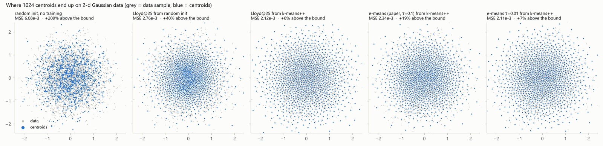

e-means (Bessa et al., November 2026) is essentially mini-batch k-means in which the centroids are updated with an exponential moving average. Each cluster keeps a moving-average count and sum, and its centroid is the sum divided by the count. The step size follows a cosine schedule that starts at α0, and every few batches any cluster whose count drops below τ = 0.1 × the mean count is "revived" by splitting a large cluster. The batch size and α0 come from two power laws the authors fitted on a single dataset, DEEP.
The paper says these laws are "not optimal on very low-dimensional and tiny datasets", and suggests the intrinsic dimension of the data is probably what is missing from them. I wanted to check whether that is true: should the step size depend on intrinsic dimension?
Short answer: mostly not. The step-size law holds up. What goes wrong at low intrinsic dimension is the random starting centroids and the revival step, and fixing those two recovers most of the gap.
| Component | Setting |
|---|---|
| Implementation | e-means and Lloyd's k-means written from scratch in PyTorch, sharing one GPU assignment function so speed comparisons are fair |
| Synthetic data | Gaussian, uniform, Student-t and Laplace data with a controlled intrinsic dimension m, plus noisy variants |
| Real data | SIFT, DEEP, GloVe and Fashion-MNIST from ann-benchmarks; RGB pixels from the scikit-image example photos |
| Step-size sweep | 15 step sizes around the law's prediction, in half-octave steps, same seeds for each |
| Intrinsic dimension | PCA, TwoNN and Levina-Bickel, including a variant with K = n/k neighbours (roughly one cluster's worth) |
| Scale | About 10,000 short clustering runs on a laptop RTX 3060 (6 GB) |
Before each of the main tests I wrote down what would count as a pass or a fail, and each test script prints its criteria as PASS/FAIL. Results are reported either way, including the tests that failed.
The step-size law is fine from intrinsic dimension of about 4 upward: regret mostly under 0.25%, with no trend in dimension (slope −0.02, 95% CI [−0.46, 0.35])
At intrinsic dimension 2, Lloyd and e-means from a random start both end about 40% above the achievable error, because of where the centroids start
e-means loses a good k-means++ start: its revival step pulls correct small clusters in the tails back to the middle
A two-part rule (k-means++ and τ = 0.01 when estimated intrinsic dimension is below 3.5) failed its first held-out test and passed the second, at −20% test MSE on average
To check that my implementation behaves like the paper's: on SIFT1M, e-means with the paper's settings beats Lloyd's k-means at 25 iterations after 2 to 3 epochs. Because both use the same assignment code, the 8 to 9× speedup I measure comes from the algorithm alone. It is the part of the paper's reported 10 to 45× that the algorithm itself accounts for.
This was the original question. For every setting I found the best step size and measured how much worse the paper's law is, the regret. Once intrinsic dimension is around 4 or higher, regret is mostly under 0.25% on synthetic data (worst case 0.55%) and under 0.18% on SIFT, DEEP, GloVe and Fashion-MNIST. It only really costs anything at m = 2. There is no trend with dimension: slope −0.02, 95% CI [−0.46, 0.35]. My starting idea, that the step should depend on dimension, did not survive.
At intrinsic dimension 2, both Lloyd and e-means from a random start end about 40% above the error that is achievable. The cause is the starting point. Picking data points as initial centroids gives a centroid density proportional to the data density p, but quantization theory (Zador) says the best density in two dimensions is proportional to p1/2, which is more spread out. The centroids start too close to the centre and stay there.
For 1024 centroids on 2-d Gaussian data, measured as the gap above the theoretical bound (these numbers are from one figure in the repository):
| Setup | Gap above bound |
|---|---|
| Lloyd (25 iterations), random start | +40% |
| Lloyd (25 iterations), k-means++ start | +8% |
| e-means, paper settings (τ = 0.1), k-means++ start | +19% |
| e-means, τ = 0.01, k-means++ start | +7% |

k-means++ fixes the start for Lloyd. e-means does not keep it: in a separate comparison from the same k-means++ start, it ends 11% worse than Lloyd.
With a good start, the tails of the distribution hold small clusters that are correct. e-means' revival step sees them as nearly dead and keeps moving them back to the middle. Starting e-means from the same k-means++ centroids and turning revival off makes it 4 to 10% better at m = 2, in 5 of 5 paired seeds. At m = 3 and 4 it barely matters. That is how it became clear the problem was revival and not the step size.
The obvious next step was to lower the revival threshold to τ = 0.01 for all data. It helps at low dimension (about −4% on average) and does nothing on SIFT, DEEP and GloVe. But on Fashion-MNIST with k = 4096, where there are only a few points per cluster, it is up to 4% worse. So it cannot be the default everywhere, and the fix needs to know the dimension first.
The rule: if the estimated intrinsic dimension is below 3.5, use k-means++ and τ = 0.01; otherwise use the paper's defaults. The estimate is Levina-Bickel with K = n/k neighbours.
First held-out test: failed. The rule improved test MSE by 16% on average and was never worse, but it failed one of my pre-stated criteria because the dimension estimate misclassified one dataset. On the retina photo with k = 2048 the estimate came out at 3.54, just above the threshold. The image only has about 17.8k distinct colours, so the estimator used only 9 neighbours. I fixed this with a floor of at least 20 neighbours, and decided on that fix using only data I had already used.
Second held-out test: passed. This used data I had not touched before: a colour-wheel image, a swiss roll, Laplace data at m = 2 and Student-t data at m = 3, with Gaussian m = 4, Laplace m = 6 and GloVe as controls that should land above the threshold. Each was run at k = 768 and 3072 for 2 and 5 epochs over 5 paired seeds, compared against the paper's defaults. The three criteria were set in advance: every low-dimensional dataset and every control classified correctly, a mean change of −2% or better on the low-dimensional ones, and no low-dimensional setting significantly worse.
Most of the effect of τ shows up where the density changes a lot, on heavy tails. On the colour wheel and the swiss roll, which are closer to uniform, k-means++ alone does all the work.
Most runs use n ≤ 106 points and k ≤ 4096; the paper goes up to 1010 points and 16M clusters. Assignment runs in FP32 rather than the paper's BF16/FP8 kernels. The link to the authors' library in the PDF is cut off, so I could not compare against their code, and my version may differ in small details. The low-dimension effects are clearest on synthetic data: image pixels are the only real low-dimensional data here, and they are noisy. The dimension rule first broke on an image with many duplicate colours, and the neighbour-floor fix passed a fresh test, but on a handful of datasets and with a single threshold of 3.5. Most real-data numbers come from 3 to 5 seeds.
Code, figures, the pre-stated criteria in each test script, and instructions for running it on GitHub: GitHub →